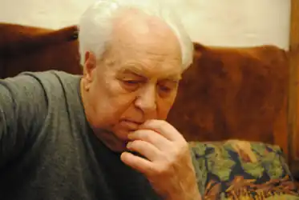

"Ти чутливий до всього на світі, до щонайменшої билинки, відчуваєш якесь солодке занепокоєння. І от нарешті розумієш: твоя сповнена почуттями душа хоче висповідатись. Ото… і є початком творчого шляху". Так сказав про початок своєї творчості письменник-мариніст та автор збірок поезій Леонід Михайлович Тендюк. А перші вірші з-під його пера з’явились, коли хлопцеві було шістнадцять років.
Народився майбутній письменник 3 березня 1931 року у селі Володимирка на Кіровоградщині. Батьки були колгоспниками. Тата хлопець знав дуже недовго, бо той загинув на війні з німецькими загарбниками у день Перемоги — 9 травня 1945 року. Спочатку відвідував сільську школу, а десятирічку закінчував у тодішньому районному центрі Велика Виска. Щодня Леонід ходив до школи і назад п’ятнадцять кілометрів.
Закінчивши школу, юнак вступив на факультет журналістики Харківського університету. Згодом перевівся у Київський університет, який закінчив 1956 року. Почав працювати у газеті "Молодь України". Одного разу редакція газети відрядила молодого журналіста на Далекий Схід, до моря. І він залишився працювати там деякий час. Адже про далекі видноколи, моря та океани мріяв змалку, з тієї миті, коли ще школярем побачив екзотичний малюнок джунглів Нової Гвінеї. Спочатку був стрільцем на звіробійній шхуні (тоді цей промисел не був заборонений), потім матросом гідрографічного судна. Ті плавання знайшли відображення у повістях "Одіссея східних морів", "Земля, де починаються дороги", "Останній рейс Сінтоку-мару". Потім Л. Тендюк був матросом експедиційного судна. Ходили на південну півкулю Землі, до архіпелагу Пуамото і Фіджі, атолів в Еніветок і Бікіні. Про ті подорожі письменник розповів у повістях "Шукачі тайфунів", "Полінезійське рондо", "Альбатрос — блукач морів". А трилогія "Експедиція Гондвана" (повісті "Викрадення", "Голова дракона", "Слід "Баракуди") — це результат поїздки Л. Тендюка у В’єтнам, подорожей до архіпелагу Чагос. Усі ті карколомні пригоди, що трапляються з дійовими особами творів письменника під водою у морях, в океані, на острівних суходолах, частіше відбувались насправді, ніж були авторським вимислом. Адже, як каже Леонід Михайлович, "портретів з уяви я не пишу". Усі морські рейси були цікавими та відповідальними, фізично навантаженими. Бо після морської вахти Леонід Михайлович ставав на нічну письменницьку "вахту". Письменник є автором близько тридцяти книжок, що виходили немалими тиражами, адже користувались і користуються популярністю у читачів. Він є автором прекрасних поетичних збірок, серед яких "Полечко-поле", "Голос моря і степу", "Стамбульські провулки". За "Вибрані твори" (у двох томах) та збірку "Смерть в океані" 1992 р. письменник став лауреатом премії імені Лесі Українки. І дотепер Л.М. Тендюк продовжує свій письменницький труд, із задоволенням згадує своє життя, бо "…скільки було цікавого, яскравого, навіть неправдоподібного, що не треба й вигадувати. І якби мені сказали: перед тобою стоїть вибір — полетіти у далекі галактики… чи знову помандрувати по островах безмежних океанів планети Земля, я б вибрав останнє". Тож пропонуємо тобі ознайомитись з окремими творами письменника Л.М. Тендюка. Можливо, коли ти їх прочитаєш, тебе також зваблять морські мандри. Земля, де починаються дороги Збірку склали повість та п’ять оповідань. "Буревісник виходить у море" — назва повісті, якою починається книжка. Це автобіографічний твір, в якому автор розповідає про початок своєї "морської" біографії — вишкіл у морехідній школі, перше плавання у південну півкулю на науково-дослідному судні "Буревісник". Людина уважна і спостережлива, із журналістським досвідом, матрос першого класу і стерновий Леонід Тендюк у повісті змалював реальну картину тієї подорожі — важкі трудові будні перших корабельних вахт, коли "…хитавиця знесилює, паралізує волю і людина стає апатичною, для неї все перестає існувати, навіть вона сама з її прикрощами…", романтику відвідин незнайомих екзотичних островів, незвичні для жителів України звичаї, свята аборигенів Нової Гвінеї, Полінезії, Таїті. І їхнє скромне життя, сповнене щоденних труднощів. Та із досвідом у морі нелегко. Під час штормів, тайфунів не раз доводилось авторові потрапляти у скрутне становище, навіть ризикувати життям. Хоча були і веселощі, особливо на свято Нептуна, коли перетинали екватор. Змалював автор і роботу науковців, які вивчають води Світового океану, його тваринний та рослинний світ, океанічні глибини. Але які б не були красиві та звабливі чужі землі, завжди повертався письменник до рідної оселі, найдорожчої у світі рідної землі. В оповіданнях, що завершують книжку, розповідається про мандри письменника тайговими хащами у пошуках кореня життя женьшеня, поїздку тундрою до оленячого пасовиська, спуск під воду до затонулого фрегата. І завжди — зустрічі з цікавими, часом незвичайними людьми, такими, як мисливець-земляк дід Семен Гришака, невтомний шукач женьшеню Корній Трохимович, різьбяр та вишивальник, провідник тундрою сліпий каюр Іван Рультитегін. Під крилами альбатроса "Спеку тропіків і крижані вітри півночі, урагани і тайфуни" — усе це за своє "морське" життя "скуштував" Леонід Тендюк. І коли ти читатимеш цю книгу мандрів, поглядай на географічну мапу. Ти відчуєш себе членом екіпажу "Витязь" і разом з автором книжки та усією командою судна здійсниш велику морську подорож. Побуваєш на коралових рифах на південь від Індії, відвідаєш Андаманські, Гавайські та Сейшельські острови, острови Родрігес, Різдва, Амстердам, Херміт, Мангуає, Таїті, Самоа, Маврікій. Дізнаєшся історії їхніх відкриттів, легенди та правду про те, як колись жили аборигени на цих землях і як змінилось їхнє життя з приходом чужоземців — відкривачів цих суходолів. Прочитаєш розповіді письменника про відомих людей, які тут побували — капітана Кука, художника Гогена, письменника Стівенсона. Разом з автором книжки пірнатимеш на морське дно, вкрите кораловими рифами, покатаєшся у морі верхи на черепасі, пошукаєш скарби легендарного пірата Сюркуфа. І кругом зустрічатимешся із земляками з України, яких примхлива доля розкидала по всьому світу.